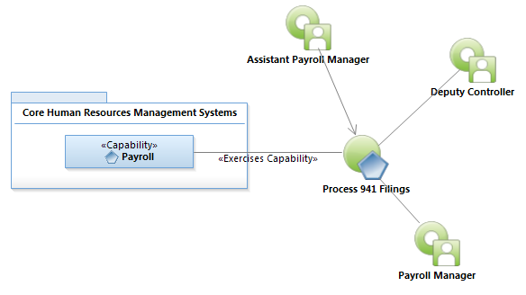
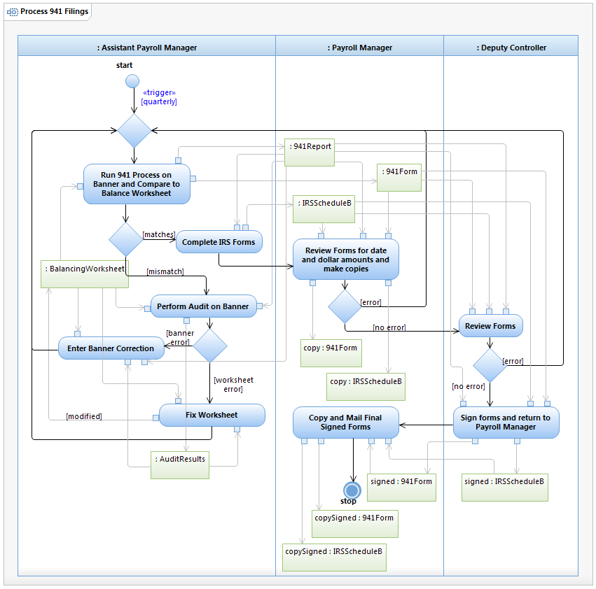

Use Case Model: Process 941 Filing
Architect: Aaron Brown, IT Enterprise Architect Senior
Date Last Modified: 11/13/2012
User Review: Ingrid Whitley, Payroll Manager
Date: 11/13/2012
At the end of each quarter, Form 941, and Schedule "B" are due to the IRS. These forms shows taxable wages and tax liability for each day during the quarter.
Follow link to Role Definitions

Use Case Model: Process 941 Filing

Activity Model: Process 941 Filing